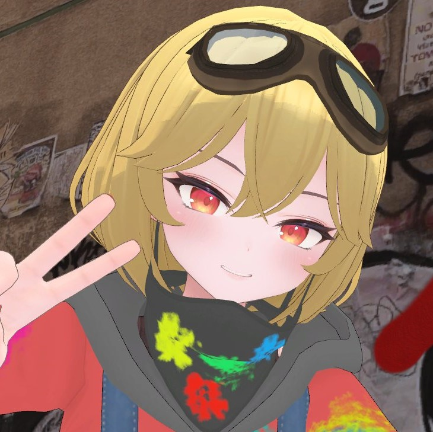

konkon
居住地
Cluster
(2020/6~)
VRChat
(2020/10~)
経歴
clusterゲームワールドコンテスト "
ドローンレース！！(in C-TECs)
" UnityJapan賞 Cluster 2020/7
バーチャル学会2020 "
機械学習を用いたClusterワールド検索手法の検討
" PA2-1 VRChat 2020/12
clusterお題企画「四畳半のメタバース」"
A Girl in 4-1/2 Cube
." とみね賞 Cluster 2022/1
ClusterGAMEJAM 2022 in SPRING "
VR農作業シミュレーター
" バラエティ部門準大賞 Cluster 2022/3
興味
3Dモデリング, VRワールド制作
現実世界のメタバース上への再構築(デジタルツイン)
仮想世界と現実世界の連携・協働
その他
メールアドレス((a)⇒@に変えてね)：ishikawa(a)unno.material.nagoya-u.ac.jp
ソーシャルメディア：
GitHub
Qiita
VRChat
Cluster